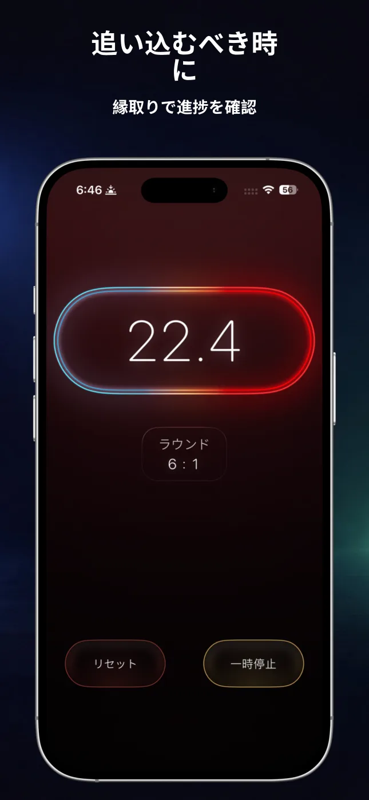
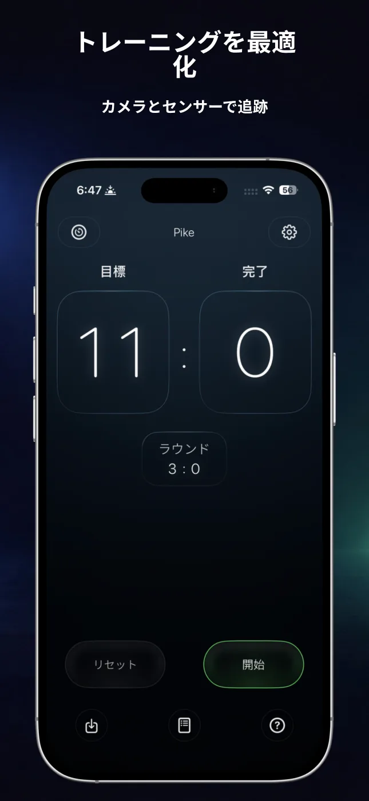
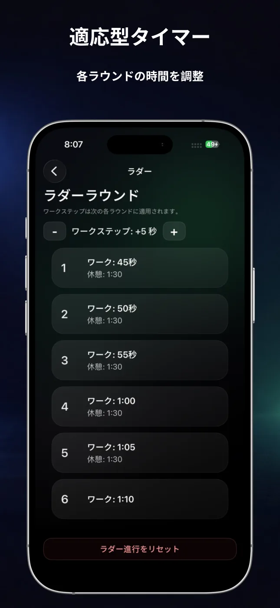
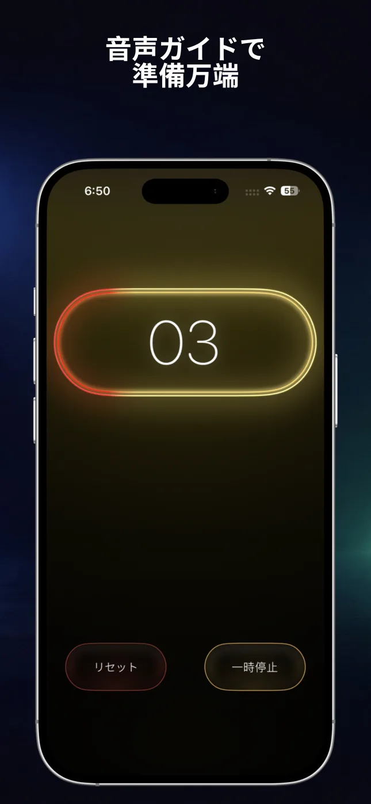
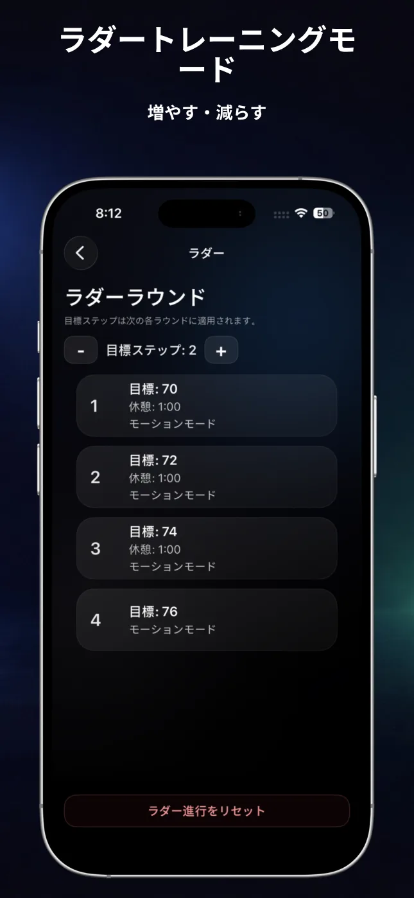
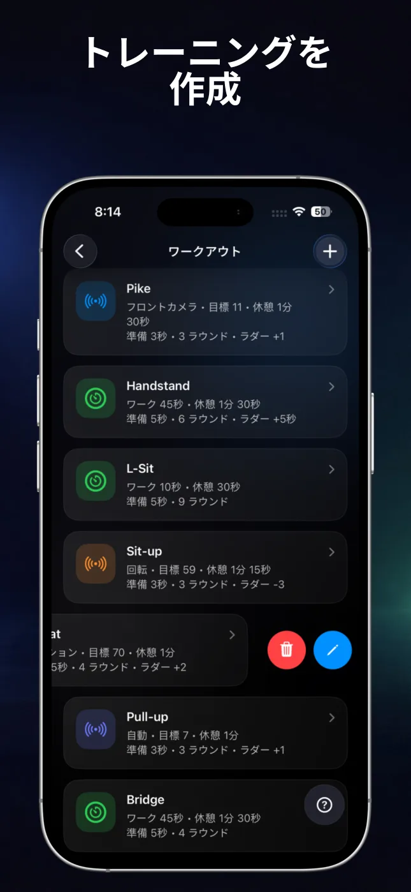

自動回数カウント
モーション、回転、自動検出、フロントカメラから選び、対応エクササイズの回数をトレーニング中に記録できます。
RepChimeは、高精度なインターバルタイマーと自動回数カウントをひとつにまとめたアプリです。メニューを設定して動き始めれば、あとはiPhoneがリズムを管理します。

時間で行うトレーニングでも、目標回数で行うトレーニングでも、RepChimeなら構成が見やすく操作もシンプルです。
モーション、回転、自動検出、フロントカメラから選び、対応エクササイズの回数をトレーニング中に記録できます。
ワーク、休憩、準備、ラウンドを設定し、短いサーキットから長いホールドまで組み立てられます。
ラウンドごとに時間や目標回数を増減させ、段階的なセッションを作成できます。
カウントダウン音、ラウンド通知、RepChime Proの音声ガイドで画面を見続けずに集中できます。
タイマーとカウンターの設定を保存し、お気に入りのメニューをすぐに開始できます。
RepChime Proでは、ライブアクティビティを使ってロック画面やDynamic Islandに進捗を表示できます。
大きな数字、明確なフェーズ、暗いインターフェースで、セット間や離れた場所からでも読みやすくなっています。





どちらのモードも操作は同じです。セッションを設定し、スタートを押して、画面と音のリズムに合わせます。
ワーク、休憩、準備を個別に設定して、HIIT、モビリティ、ホールドのセッションを作成できます。ラウンド、音のカウントダウン、時間ラダーにも対応します。
目標を設定し、モーション、回転、自動、フロントカメラから検出方法を選択。プッシュアップ、シットアップ、懸垂、スクワットに対応しています。
設定可能なHIITタイマーと、iPhoneのセンサーやフロントカメラを使って対応エクササイズを記録できる目標ベースの回数カウンターを備えています。
プッシュアップ、シットアップ、懸垂、スクワットに対応しています。利用できる検出方法はエクササイズごとに異なり、フロントカメラはプッシュアップで使用できます。
はい。タイマーとカウンターのプリセットを保存できます。RepChime Proでは、保存できる数と編集機能が拡張されます。
必要ありません。ワークアウトのプリセットと設定は端末内に保存されるよう設計されています。App Storeでの購入はAppleが処理します。